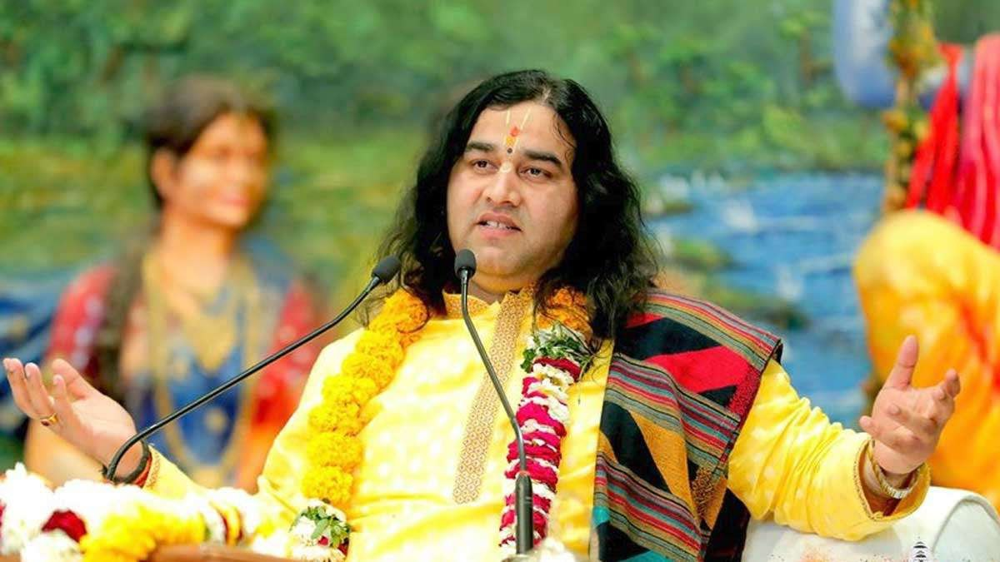
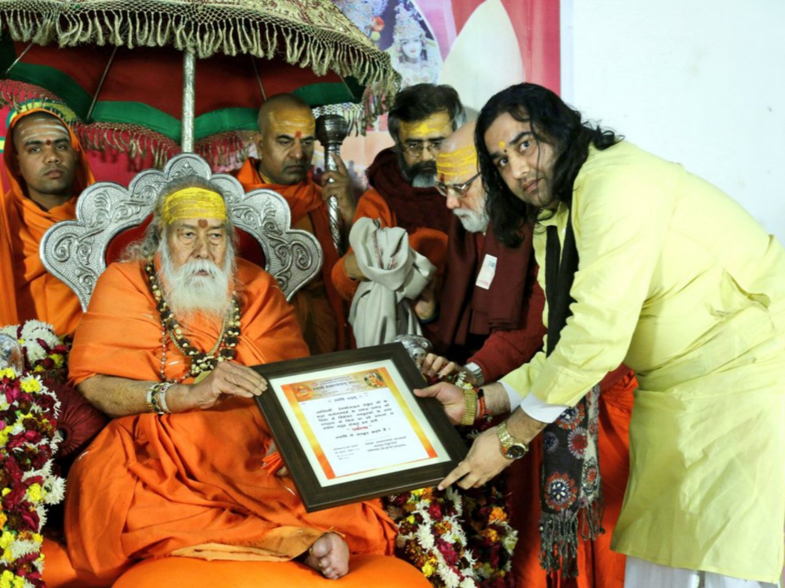
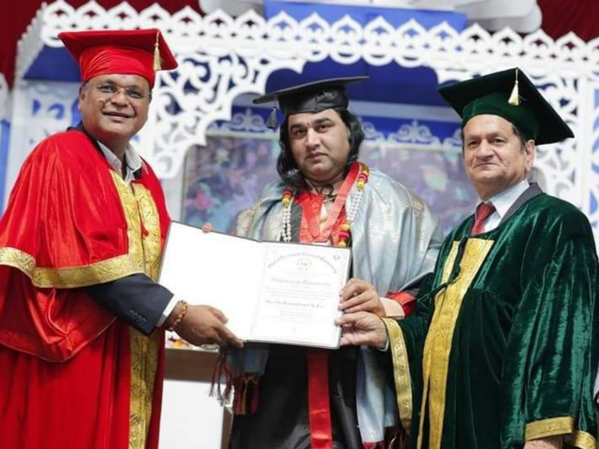
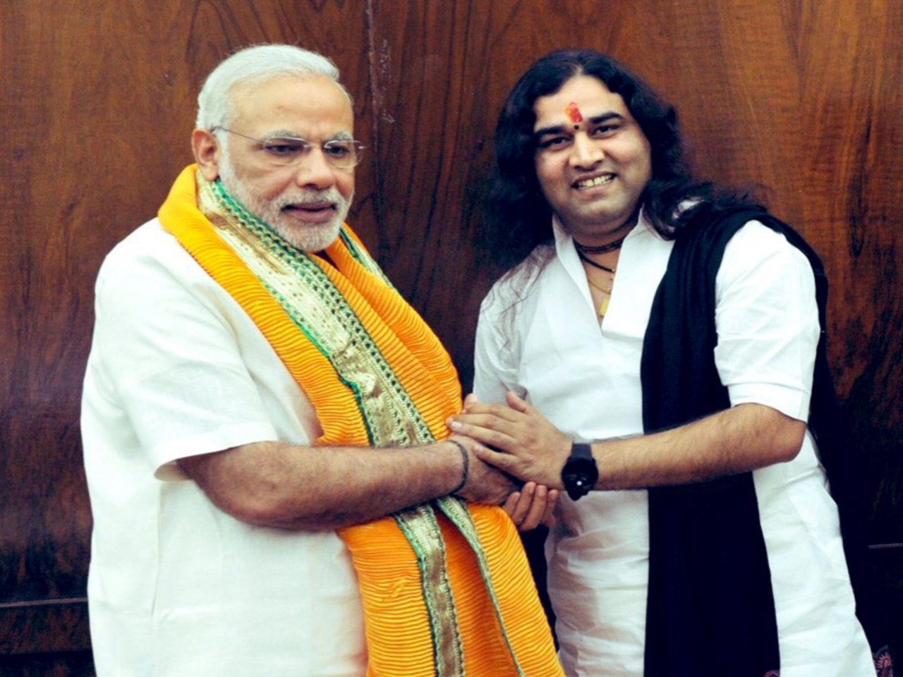
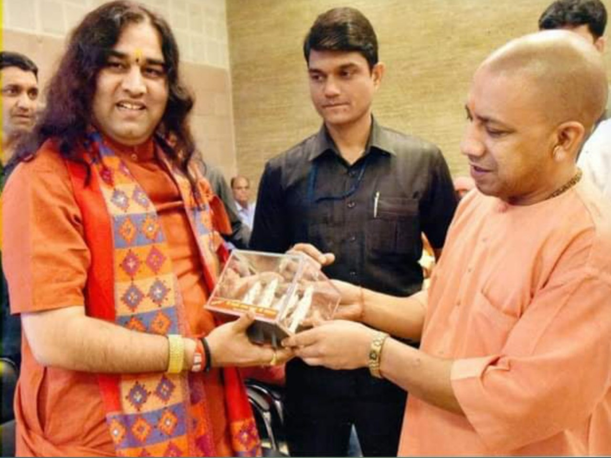
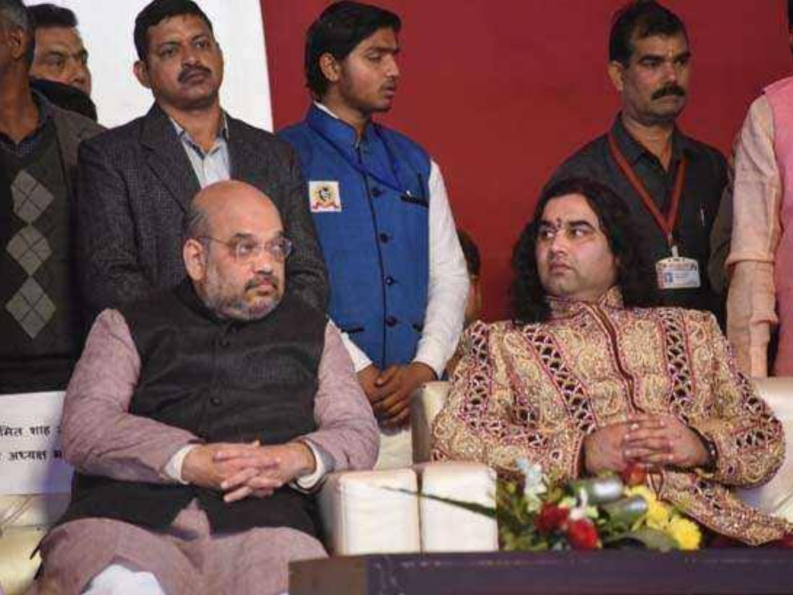
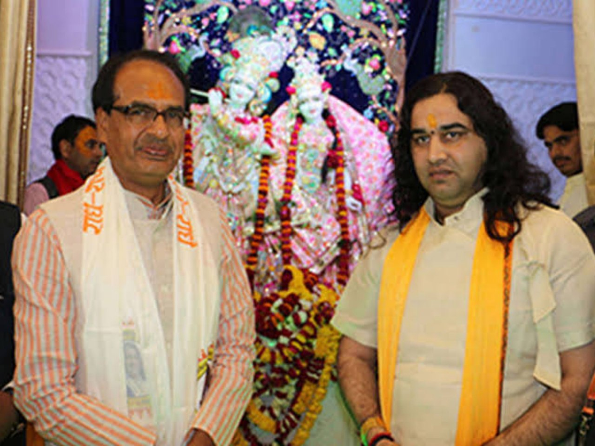

Dharm Ratna • Shantidoot • Acharyindra
Read His Story arrow_downwardBorn on 12th September 1978 in Ohwa Village of Mathura (Birthplace of Lord Krishna), Uttar Pradesh. Born in a Brahmin family to Mr. Rajveer Sharma, he was the second child in a family of four sons and two daughters. From childhood, he showed signs of divine insight and greatness.
From the age of six, he left home and lived in Shridham Vrindavan, participating in the famous Rasleela Sansthan of Braj, performing as Lord Krishna and Lord Rama. He met his spiritual teacher, Anant Shri Vibhushit Bhagwat Acharya Purushottam Sharan Shastri Ji, and received initiation under the Nimbark Sampraday.
At just 13 years old, with blessings of his Sadhguru, he learned the entire Shrimad Bhagwat Mahapuran. By 18, he began reciting and preaching its teachings at Shri Ram Mandir, Shahdara in Delhi. The attendees were touched by the divinity in his voice and his simple, unique manner of delivery.
A spiritual guru and humanist whose melodious hymns and discourses bring joy within every soul. A large number of devotees participate in his sankirtan, experiencing the divine presence of Shri Radha and Lord Shri Krishna.






Conferred the title of "Messenger of Peace" by Nimbarakacharya Jagadguru Shri Shyamsharan Devacharya for spreading the message of peace and love around the world.
The Shri Brahmin Mahasangh honored his Holiness Shri Devkinandan Thakurji with the rank of 'Acharyindra'.
Conferred with the title of 'Dharm Ratna' in 2017 by Pujya Jagadguru Shankaracharya.
Awarded the UP Ratna Award in 2017 for his charitable work, presented by Chief Minister Yogi Adityanath.
At the request of devoted followers, he spread his message to USA, Canada, Hong Kong, Singapore, Thailand, Malaysia, Denmark, Sweden, Norway, and Holland.
Well-known orator of Shrimad Bhagwat Katha, Shiv Mahapuran, Garud Puran, Devi Bhagwat Puran, Padma Puran, ShriRam Katha, ShriKrishna Katha, Bhaktmal Katha, Brahmavaivarta Puran, Vishnu Puran, Varah Puran and many more.
Led campaigns to end the Dowry system, making Ganga and Yamuna rivers pollution free, Cow protection, Ram Mandir, and Water & Environment protection.
Established in 2006, the trust maintains peace culturally and economically. It helps poor, disabled and elderly citizens, preserves culture, runs cow sheds, and serves orphan children.
Built a beautiful 125-feet tall temple at Shanti Sewa Dham, Vrindavan, inaugurated in 2016. Unique in the world, it is built on a structure symbolising the lotus flower.
Over 4 Million followers on YouTube and 3 Million+ on Facebook, spreading spiritual wisdom across the globe through social media platforms.